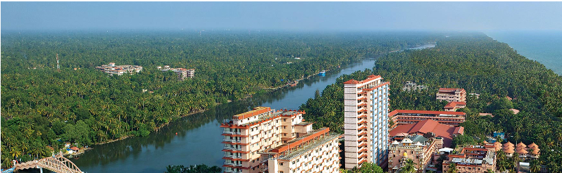
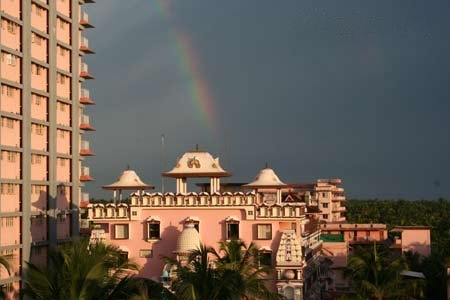

Amrita School of Engineering, Amritapuri campus, is a prestigious institution located in Amritapuri, Kerala, India. It is a part of Amrita Vishwa Vidyapeetham, a multi-campus university that is known for its excellence in education and research.
The Amrita School of Engineering at Amritapuri offers a wide range of undergraduate and postgraduate programs in various fields of engineering and technology. It is renowned for its comprehensive curriculum, world-class infrastructure, and highly qualified faculty members.
The campus provides a conducive environment for learning, innovation, and personal growth. It promotes a holistic approach to education, focusing not only on academic excellence but also on the overall development of students. The emphasis is placed on practical learning, research-oriented projects, industry collaborations, and hands-on training.
Amrita School of Engineering, Amritapuri campus, is known for its strong industry connections and collaborations. It has tie-ups with leading companies and organizations, which offer internships, industrial visits, and placement opportunities to students. The campus has a dedicated Training and Placement Cell that assists students in securing promising career opportunities.
Apart from academic pursuits, the campus is vibrant with various co-curricular and extracurricular activities. Students actively participate in technical competitions, cultural events, sports, clubs, and community service initiatives. This fosters a spirit of teamwork, leadership, and social responsibility among the students.
The serene and picturesque campus of Amritapuri, nestled amidst nature's beauty, provides a conducive environment for learning and personal growth. It offers modern amenities, state-of-the-art laboratories, well-equipped libraries, and recreational facilities to ensure a fulfilling educational experience.
Amrita School of Engineering, Amritapuri campus, continues to produce engineering graduates who excel in their chosen fields and contribute to the society at large. It is recognized as a center of excellence in engineering education and is held in high regard both nationally and internationally.
Here is the list of top activities around Amritapuri!

Amritapuri, the international spiritual headquarters of the devotees of Amma’s monastic disciples as well as household, is situated in the very same place where Amma was born. Everyday, thousands of devotees from India and abroad flock to Amritapuri, to get Amma’s darshan and blessings know more..
13 December 2006 — Amritapuri On the 20th of December, the President of India, His Excellency Dr. A.P.J. Abdul Kalam, will inaugurate Amrita Setu, the Ashram-constructed bridge connecting Alappad Panchayat with Vallikkavu. Amrita Setu was constructed by the Ashram as part of its extensive tsunami-relief program, wherein Amma dedicated one hundred crores {news} towards relief […] know more..

HISTORY OF AMRITHAPURI
In the beginning the ashram was simply Amma’s family’s house, actually in the cow shed. The handful of brahmacharis slept on the sand under the stars. Amma had a small hut built next to the parents’ house, which doubled as a kitchen, in which she slept with the earliest female disciples. Darshan took place in the family cows’ cowshed that Amma’s father had allowed to be converted into a small temple. This first temple still exists today; it is known as the Kalari, is now used for the conducting pujas.more..